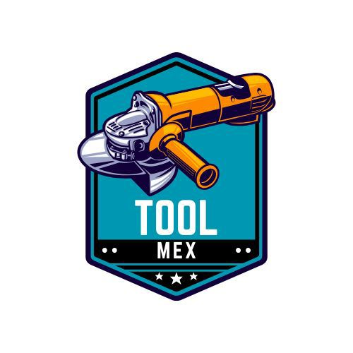

Pala
Pico
Rastrillo
➡️

Toolmix 3 en 1
Tradicionalmente necesitas llevar tres herramientas pesadas para trabajar: pala, pico y rastrillo...
Con Toolmix, tienes todo en una sola herramienta modular, ahorrando espacio, peso y dinero.
Pala
Pico
Rastrillo
Toolmix 3 en 1